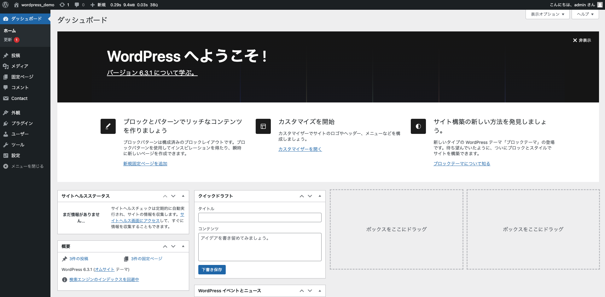
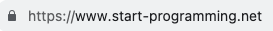
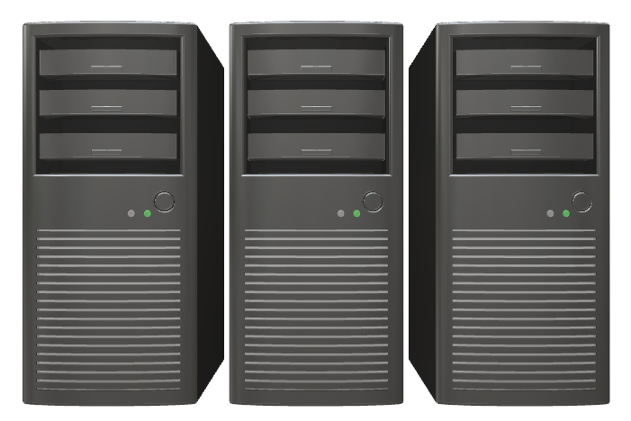

WordPress（ワードプレス）は、ウェブサイトを作成、公開、管理するためのコンテンツ管理システム（CMSと呼ばれるもの）です。
簡単に言うと、これまで学習してきたHTMLやCSSで作ったサイトを読み込ませて、編集などが出来るようになるシステムのことです。
今後サイト制作の仕事をすることになった時、このWordPressを使うことが多々あります。
とても重要な内容になるので、WordPressについての理解をしっかり深めていきましょう！

①WordPressはブログのように文字や写真を入れるだけでサイトを作成することが出来るので、技術的な知識が少ない人でも比較的簡単にウェブサイトを作ることができます。
②「プラグイン」と呼ばれる追加機能をインストールすることで、サイトにさまざまな機能を追加することができます。
例）お問合せフォームやSEO対策ツールなど。
③見た目やデザインは「テーマ」と呼ばれるものを変更することで簡単にカスタマイズできます。テーマは、無料から有料のテーマまで、幅広くあります。
また、通常のサイトのように、テーマ（見た目などのデザイン）を自分で一から作ることも出来ます。
プログラミングの知識がない人でも、サイトを更新したり修正が出来るので、とても便利だということを覚えておきましょう！
WordPressが表示される仕組みを理解するために、ドメイン・サーバー・IPアドレスについての理解を深めていきましょう！
URLに含まれているもので、スタプロの場合は「start-programming.net」がドメインになります。
〇〇.jpや〇〇.comなどをよく見かけると思いますが、あれがドメインです。
ドメインは「住所」のようなものであり、ドメインをクリックすることでサーバーにアクセスすることが出来ます。
サーバーには、サイトのデータや情報が保存されています。
このサーバーにHTMLやCSSなどのファイルが入っており、そこにアクセスすることでみんなはサイトやYouTubeを見ることが出来ます。
そのサーバーには、物理的なサーバー（目に見えるもの）とソフトウェアとして動作するサーバー（目に見えない）ものがあります。
目に見えるサーバーは、以下の写真のようなイメージです。
目に見えないサーバーはクラウド（雲という意味があります）などと呼ばれ、自分のコンピュータやオフィスの中だけでなく、どこからでもインターネットを通じてデータにアクセスすることが出来ます。
「サーバーというところに色んなデータが保存されているんだな」ということを覚えておきましょう!
サーバーには、IPアドレスというものが割り振られています。（識別するための番号）
例）192.168.〇〇.〇〇〇
このIPアドレスがインターネット上の住所であり、ドメイン（start-programming.netなど）をクリックするとIPアドレスに辿り着きサーバーにアクセスすることが出来ます。
そのようにしてサーバーにアクセスすることで、私たちはサイトなどを見ることが出来ます。
IPアドレスは192.168.〇〇.〇〇〇などとても見えにくいので、それを見えやすくするためにドメイン（start-programming.netなど）があります。
そのため、ドメインとIPアドレスは紐づいています。
①Googleなどで何かを検索（仮にYouTubeだとする）し、言葉をクリックするとYouTubeのページに飛ぶ。
②なぜYouTubeのページに飛べるかというと、「YouTube：ホーム」という言葉をクリックすると「このページに飛んでね〜」という
設定が裏でしてあるから。
（言い換えると、ドメインに紐づいているIPアドレス先に飛ばしている）。
③クリックした先には何があるかというと、YouTubeのデータ（動画など）があり、それを見ることが出来る。
（動画などがサーバーというものにアップしてあるから、YouTubeなどの動画が見れる）